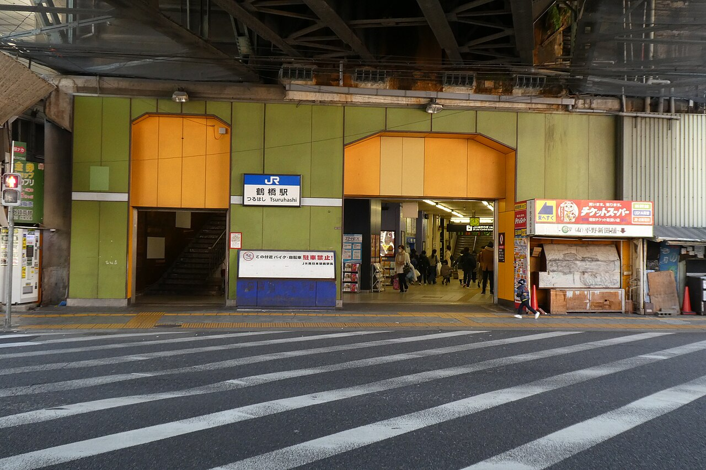
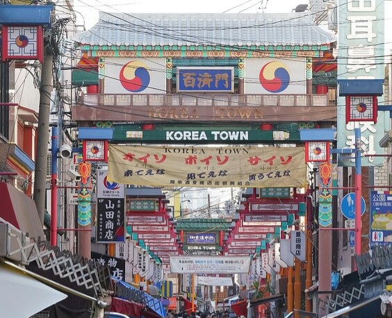
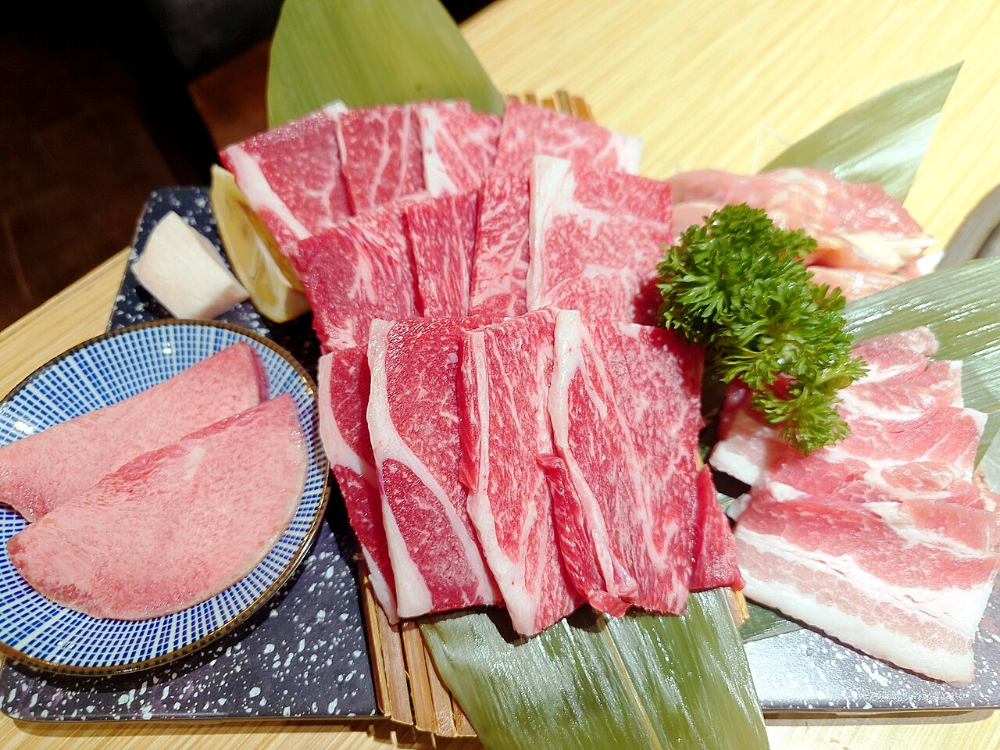

候选住宿 · 未最终确认
img').src=this.src">

img').src=this.src">
img').src=this.src">HOME BASE · 候选住宿
Olina's House · 东成区 / 鹤桥
这项还没最终订，写在这里只是候选参考。Airbnb 上的整套 4 卧室独立屋，位置在大阪东成区、靠近鹤桥站，主打家庭/团体入住，5 个人住得开、不用拼房。鹤桥站有近铁/JR/大阪地下鉄多线交会，去难波、新大阪、关西机场换乘都方便；车站周边就是大阪最有名的鹤桥韩国城，泡菜、经典烤肉、韩式食材店密集，住这一带买菜吃饭都方便。行李可以放在这里直到出发，两人分两天送机不用来回搬行李。